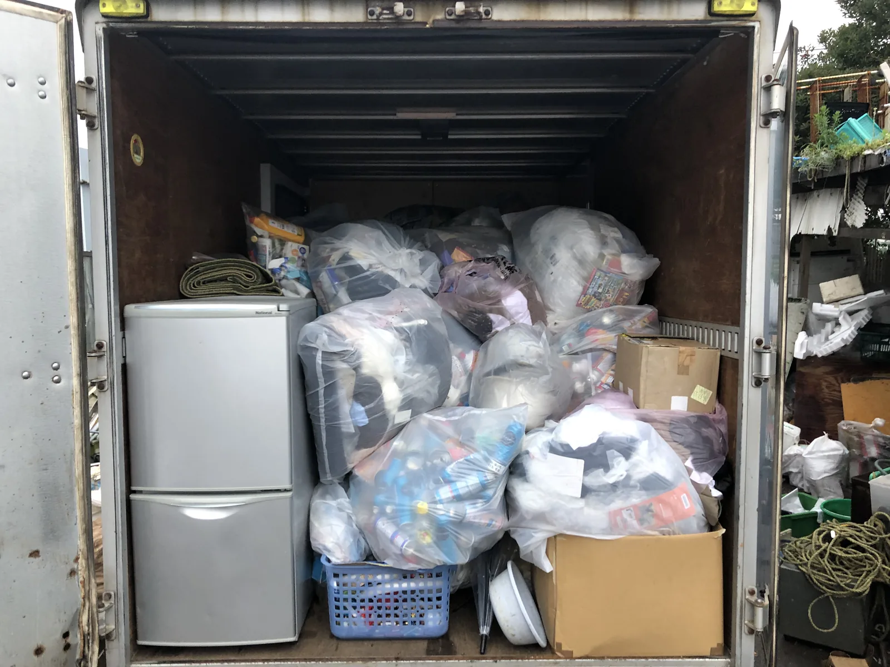
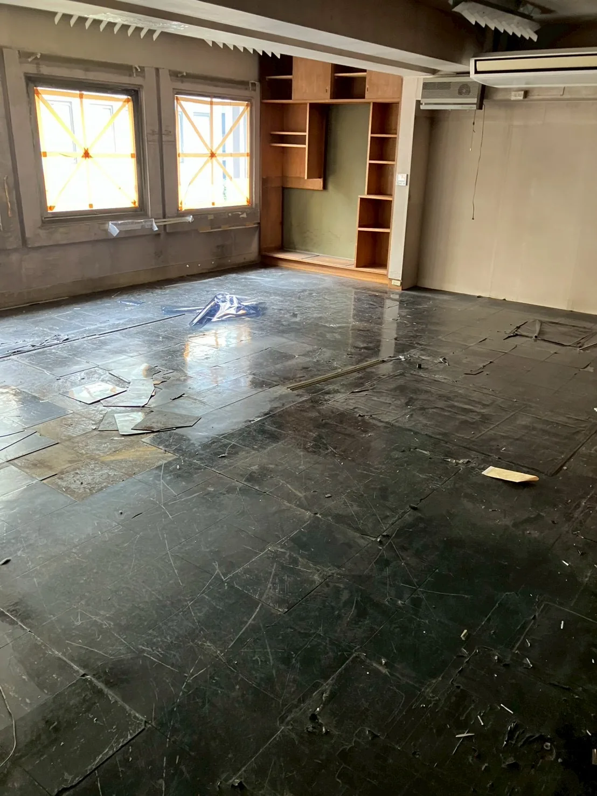
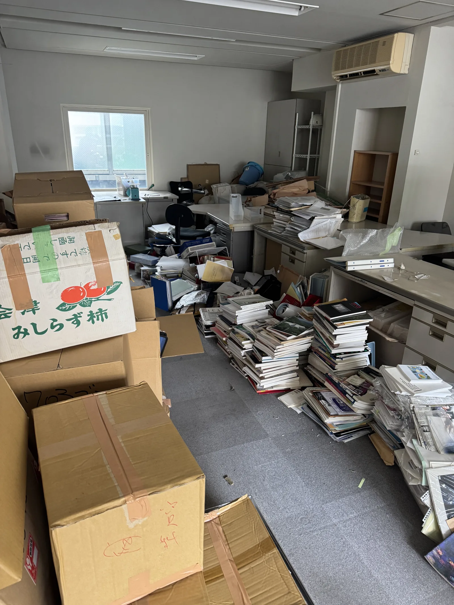
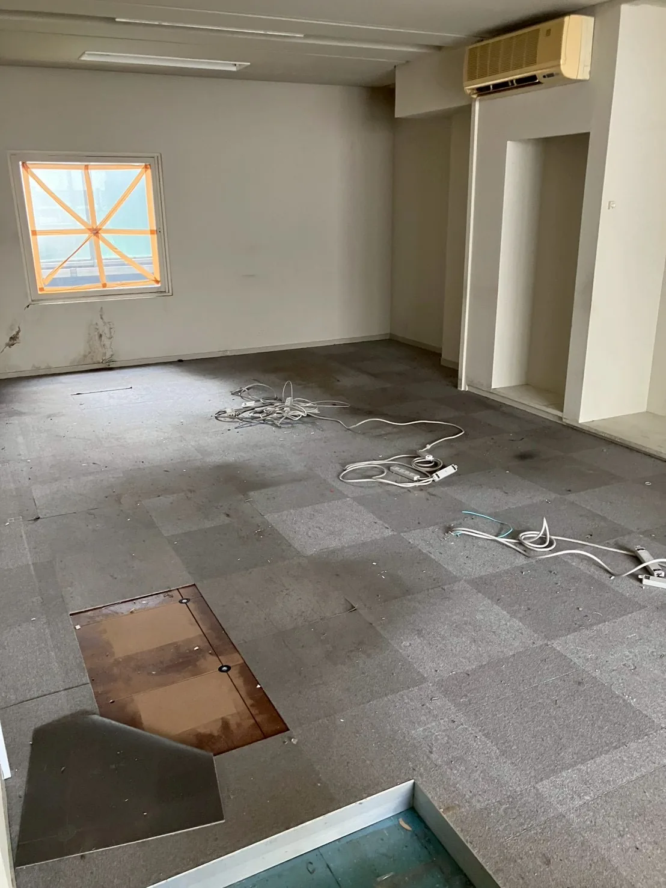
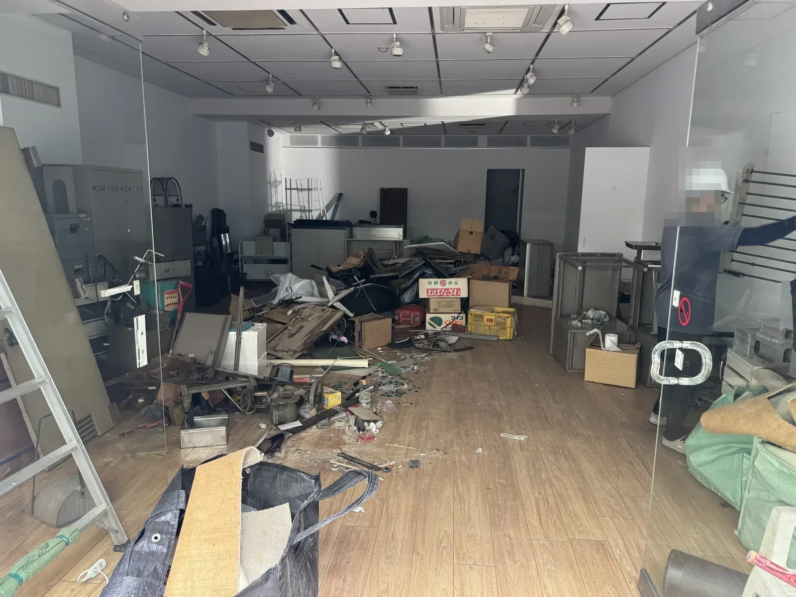
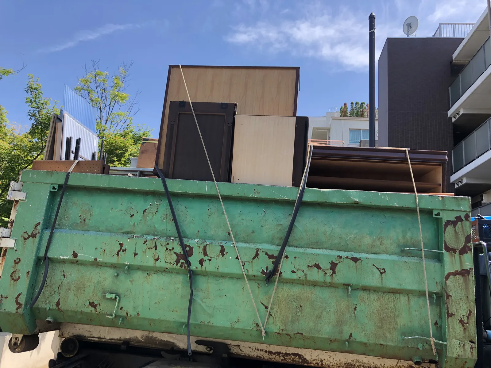
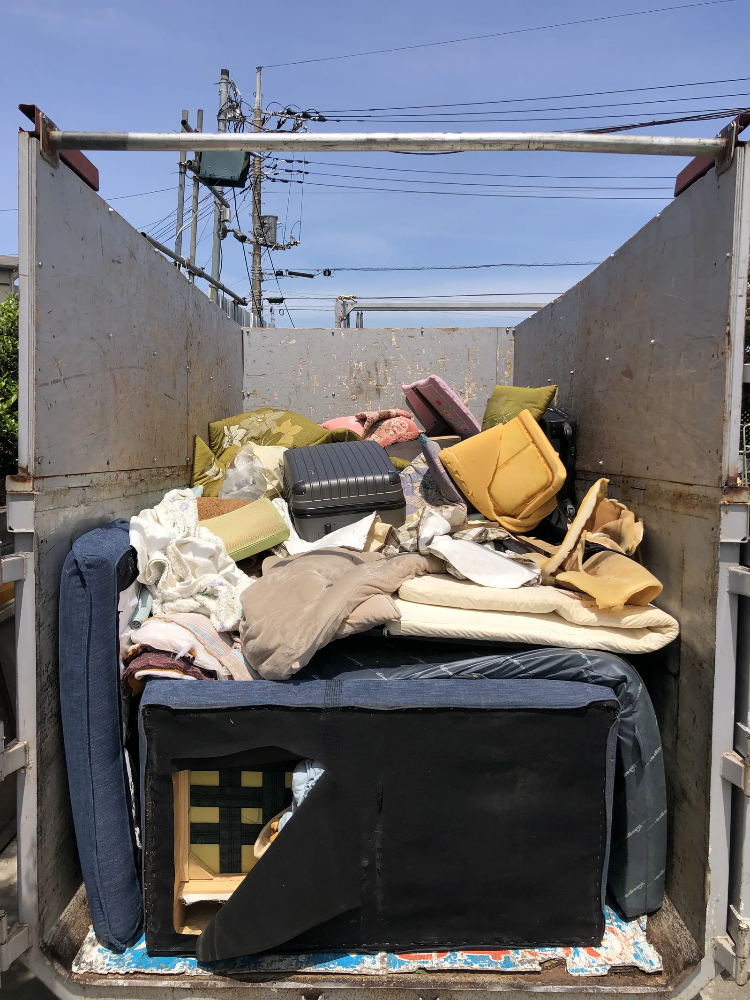
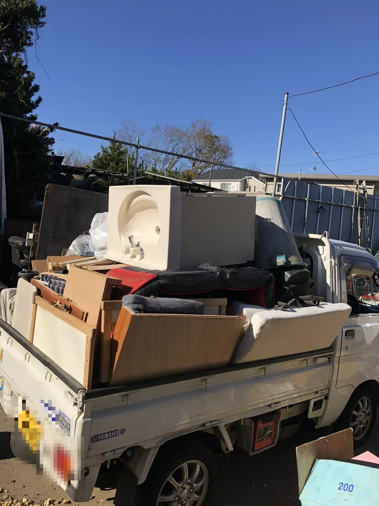
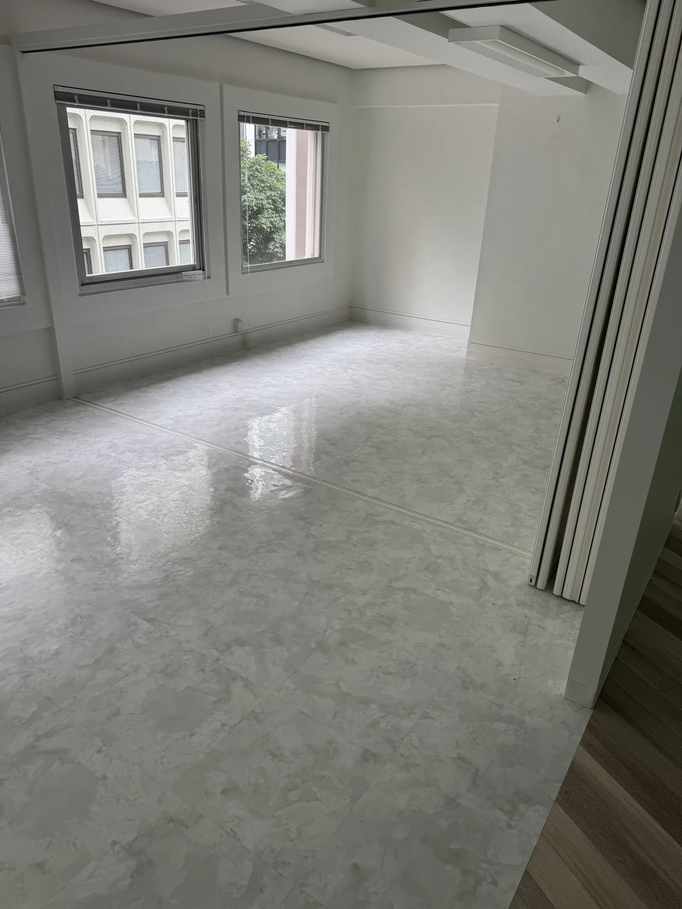

BUSINESS COLLECTION店舗・事業者向け回収サービス
売れ残った在庫、
まとめて回収します。
リサイクルショップ・店舗・倉庫の在庫や什器を、
分別前の状態から搬出・積み込みまで対応。
少量回収や訪問時の運搬費は要相談、事前にご案内します。
受付 9:00〜18:00・日曜定休｜045-482-6608
- 横浜市全18区対応
- 分別前でも相談可能
- 搬出・積み込み対応
- LINEは写真を送るだけ
PROBLEM
こんなお困りごとはありませんか
- 売れ残った在庫をまとめて片付けたい
- バックヤードや倉庫を空けたい
- 処分費用をできるだけ抑えたい
- 閉店や移転まで時間がない
- 通常の回収業者に断られた
- 分別する時間や人手がない
- 在庫・家具・什器などが混在している
- 搬出や積み込みまで任せたい
アートさくらは、店舗・事業者向けの有料回収サービスです。分別前の混在した状態からご相談いただけます。まずは現状の写真をお送りください。
SERVICE
分別していなくても大丈夫です
分別前の状態から相談可能
在庫・家具・雑貨が混在したままで構いません。品目や物量が分かる写真があれば、そのまま概算をご案内します。
搬出から積み込みまで対応します
店内・バックヤード・倉庫からの搬出、車両への積み込みまでスタッフが行います。人手の手配は不要です。
閉店や移転でお急ぎのご相談にも
予約状況に空きがあれば、即日または翌日の対応も検討します。希望日をお知らせください。
他社で断られた品も、まずは確認します
他社で断られた品も、まずは受け入れ可否をご相談ください。品目や状態を確認し、対応方法をご案内します。

ITEMS
在庫も什器も、まとめて回収
- 家具
- 家電
- 衣類
- 食器
- 雑貨
- 店舗什器
- 陳列棚
- 事務机
- 椅子
- キャビネット
- 段ボール
- 混載品
- 売れ残り在庫
- バックヤードの残置物
危険物、医療系廃棄物、液体、生ものなど、法令や安全上の確認が必要な品目は、個別にご相談ください。品目や状態を確認し、対応方法をご案内します。
PRICE
料金目安
基本料金の目安
1立米あたり税込10,000円
1立米の目安：縦・横・高さ約1mに収まる体積
品目・物量・搬出状況により料金は変動します。
少量回収や訪問時の運搬費については、事前にご案内します。
- 料金は品目、物量、搬出状況などにより変動します
- 少量の場合は物量に応じて算出します（最低料金1万円ではありません）
- 階段作業、解体、重量物、搬出距離などは現場状況により別途お見積もりします
- 現地訪問を伴う場合の運搬費は要相談です。訪問前に費用の有無をご案内します
- 正式な料金は事前にご案内し、変更がある場合は作業前にご案内します
写真によるご相談と概算見積もりは無料です。まずは現状の写真とおおよその物量をお送りください。
CASE
作業事例
店舗・事務所での回収作業の一例です。個人情報保護のため、一部の写真に加工を行っています。
事務所什器・残置物の回収


室内に残されたスチール机、キャビネット、作業台などの什器を搬出。分別前の状態から回収作業を行いました。
書類・段ボール・事務机の回収


事務所内に残された段ボール、書類、書籍、事務机などを搬出。分別前の状態から回収作業を行いました。
店舗・事業所の回収事例




REASON
アートさくらが選ばれる理由
写真1枚から相談が進みます
写真とおおよその物量が分かれば、現地に伺う前から話を進められます。「これは回収できるか」だけのご相談も歓迎します。
少量から大量まで、物量に応じて算出
少量のご相談から、閉店・移転に伴う大量の在庫・什器まで、品目と物量に応じて料金を算出します。
料金変更は必ず事前にご案内します
ご相談内容と実際の品目・物量が異なる場合など、料金に変更が生じるときは作業前に必ずお伝えします。
在庫・什器・雑貨をまとめて一度に依頼できます
品目ごとに業者を分ける必要はありません。混在した状態のまま、まとめてご相談いただけます。
横浜市全18区、市外もご相談ください
横浜市内全域へ伺います。市外についても、場所や物量により対応を検討します。
他社との違いは、まず話を聞くことです
品目や状態を確認し、対応方法をご案内します。受け入れを断られた経験がある場合も、まずはご相談ください。

FLOW
相談から回収までの流れ
- 1
電話・LINE・メールで相談
回収したい品目やご希望日をお知らせください。
- 2
写真と物量を送る
回収品の写真とおおよその物量をお送りください。LINEなら写真を送るだけで進められます。
- 3
概算見積もり
写真をもとに無料で概算をご案内します。
- 4
必要に応じて現地確認
正確な料金の確認に訪問が必要な場合は、訪問前に運搬費などの有無をご案内します。
- 5
回収日時を決定
ご都合に合わせて日程を調整します。
- 6
搬出・積み込み・回収
当日はスタッフが搬出から積み込みまで行います。
写真を送るだけで無料概算。現場の写真をLINEで送っていただくのが最短です。
LINEで写真を送るAREA
横浜市全18区へ伺います
- 鶴見区
- 神奈川区
- 西区
- 中区
- 南区
- 港南区
- 保土ケ谷区
- 旭区
- 磯子区
- 金沢区
- 港北区
- 緑区
- 青葉区
- 都筑区
- 戸塚区
- 栄区
- 泉区
- 瀬谷区
横浜市外は、場所や物量により対応を検討します。事前にご相談ください。
受付・営業時間：9:00〜18:00・日曜定休
COMPANY
会社情報
| 会社名 | 株式会社アートさくら 神奈川本社 |
|---|---|
| 所在地 | 〒224-0053 神奈川県横浜市都筑区池辺町1183-4 |
| 電話番号 | 045-482-6608 |
| メール | y.artsakura@gmail.com |
| 営業時間 | 9:00〜18:00・日曜定休 |
| 古物商許可証番号 | 451930009599号 |
本サービスは買取を行わず、有料回収としてご案内します。
スマホでスキャンしてLINEを追加
写真を送るだけで無料概算をご案内します。
FAQ
よくある質問
分別していなくても依頼できますか？
分別前の状態からご相談いただけます。品目や物量が分かる写真をお送りいただくと確認がスムーズです。
少量でも依頼できますか？
少量でもご相談いただけます。料金は品目、物量、搬出状況などに応じてご案内します。
1立米とはどのくらいですか？
縦1m、横1m、高さ1mに収まる程度の体積が目安です。実際の料金は品目や搬出状況によって変わります。
写真だけで見積もりできますか？
写真から無料で概算をご案内できます。正確な料金の確認に現地訪問が必要な場合は、訪問前に費用の有無をご案内します。
見積もり後に料金が変わることはありますか？
ご相談内容と実際の品目や物量が異なる場合などは、料金が変わる可能性があります。変更がある場合は作業前にご案内します。
他社で断られたものも回収できますか？
品目や状態を確認してご案内します。まずは写真またはお電話で受け入れ可否をご相談ください。
閉店日が迫っていますが対応できますか？
予約状況に空きがあれば、即日または翌日の対応も検討します。希望日をお知らせください。
横浜市外でも依頼できますか？
場所や物量により対応を検討します。事前にご相談ください。
日曜日も対応できますか？
日曜日は定休日です。月曜日から土曜日の9:00〜18:00に受け付けています。
買取は行っていますか？
本サービスでは買取を行わず、有料回収としてご案内しています。
CONTACT
まずは回収できるか聞いてみる
写真によるご相談と概算見積もりは無料です。
「これは回収できるか」だけのご相談も歓迎します。